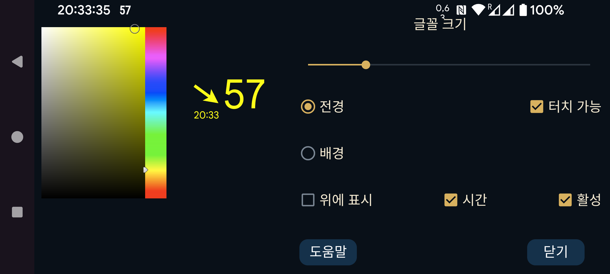

여기에서 플로팅 혈당의 글꼴 크기와 전경색 및 배경색을 설정할 수 있습니다.
터치 가능: 설정하면 손가락으로 플로팅 혈당을 이동할 수 있고, 움직이지 않은 채 길게 눌러 작게 만들 수 있습니다. 터치 가능을 해제하면 터치 입력이 플로팅 혈당 아래의 창으로 전달되어 그 아래 앱을 사용할 수 있습니다. 플로팅 혈당을 두 번 탭 하여 터치할 수 없게 만들 수도 있습니다.
투명: 배경을 보이지 않게 합니다.
위에 표시: Juggluco가 전경에 있어도 플로팅 혈당을 계속 표시합니다.
시간: 혈당값의 타임스탬프.
활성: 켭니다.
왼쪽 가운데 메뉴→플로팅에서 플로팅 혈당을 켜고 끌 수 있습니다.
플로팅 혈당의 화살표 쪽 을 탭하면 Juggluco로 전환합니다. 혈당값 쪽을 두 번 탭하면 플로팅 혈당을 터치할 수 없게 됩니다. 길게 누르면 혈당값이 작은 값만 표시되도록 바뀌어 그 아래를 조작할 수 있습니다. 작은 표시를 탭하면 다시 커집니다. 혈당값 쪽을 누른 채 움직이면 플로팅 혈당이 이동 합니다.
다른 앱 위에 표시하려면 Juggluco에 특별한 권한이 필요합니다. Wear OS 및 Android Automotive에서는 adb로 이 권한을 부여해야 합니다:
adb shell pm grant tk.glucodata android.permission.SYSTEM_ALERT_WINDOW
일부 워치(예: TicWatch Pro)에서는 Android/Wear OS 설정→앱 및 알림→앱 정보→Juggluco→고급→다른 앱 위에 표시에서도 허용할 수 있습니다.